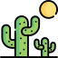

¿Por qué son tan importantes?
México es reconocido como uno de los lugares más biodiversos del planeta; es lugar de cerca del 10% de las especies conocidas. Amenazas del cambio climático y de las actividades humanas en ambientes naturales son de gran amenaza para la existencia de la vida salvaje. Se calcula que en México existe una cantidad de 18.000 a 30.000 especies de plantas. De este total, se estima que 10.000 a 13.000 son endémicas; éstas están concentradas principalmente en las zonas áridas y semiáridas.
Las razones de que algunas plantas terminan en peligro de extinción varían,  siendo a menudo la interferencia del humano en el ecosistema una de ellas. Incluso cuando otras plantas causan problemas a especies en particular, los humanos normalmente ha sido la raíz de ese escenario. El mayor factor detrás de la disminución de la población de plantas es la pérdida del hábitat que necesitan para crecer. Por ejemplo, la construcción de carreteras, edificios, casas,etc. han destruido el hábitat de muchas plantas y animales.
PLANTAS EN PELIGRO

Lechuguilla

Barril de Oro
Falso Peyote
Ocotillo

Echinocereus schmolli
Anacuita

Bola de Hilo

Turbinicarpus Mandrágora
¿Cuáles son las plantas en peligro?
Lechuguilla
Es una planta agavácea cercana al agave del que se obtiene el mezcal. Tiene la particularidad de florear una sola vez en su tiempo de existencia. Es extensamente empleada en la fabricación de piezas textiles, cepillos o brochas, además de tener usos en algunos medicamentos de medicina natural.
Barril de Oro
Aunque esta esfera espinosa es una de las especies de cactus más populares en cultivo, está casi extinta en la naturaleza. Puede ser encontrada en el centro de México, pero su hábitat fue severamente reducido en los años 90 gracias a la construcción de una represa. Este cactus es cultivado en criaderos en todo el mundo, pero las personas continúan sacando este cactus ilegalmente de la naturaleza. Los expertos estiman que esta planta puede estar extinta en la naturaleza en los próximos 30 años.
Falso Peyote
Una de las especies endémicas de México más amenazada y conocida. Esta cactácea es originaria de las zonas desérticas al norte de México y además de su belleza y excentricidad, es conocida por sus ingredientes psicoactivos y su utilización ritual por pueblos prehispánicos. Debido a su consumo indiscriminado por el turismo, los 6 años que lleva madurar y su floración rosada en primavera, esta planta endémica se encuentra en grave peligro de extinción en México.
Ocotillo
Planta formada por palos simples y erectos distribuida por zonas desérticas, sobre todo de Chihuahua y Sonora, aunque también Querétaro. Es capaz de almacenar y florecer en estación muy seca.
Echinocereus schmolli
Es una planta de tipo cactácea muy extendida por el centro de México. Es una especie en peligro de extinción, aun cuando su cultivo está bastante difundido. Puede llegar a vivir hasta 100 años. Debido a su vistosidad, es básicamente una planta ornamental, muy apreciada en el campo de la jardinería.
Anacuhita
Árbol distribuido por la Sierra Madre Oriental, llegando a algunas regiones de Querétaro. Puede llegar a medir 6 metros de altura y destaca por las flores blancas que aparecen a finales de primavera de sus ramas.
Bola de Hilo
Se trata de una de las plantas mexicanas en peligro de extinción. Dicha especie que se clasifica dentro de la familia Cactaceae. Es endémico de Querétaro ya que su hábitat natural son los lugares desérticos. Se considera en peligro de extinción por pérdida de hábitat.
Turbinicarpus Mandrágora
También se le conoce como mandrágora, biznaguita o palito. Es un ejemplar de fanerógama perteneciente a la familia Cactaceae. Su apariencia es de forma globosa. Llegan a medir hasta cinco centímetros de altura y seis de diámetro. Es una de las plantas mexicanas en peligro de extinción por la colecta ilegal. Se le suele dar un uso ornamental.
Acciones que puedes hacer para ayudar a las especies en peligro de extinción

Siembra árboles y plantas locales
Las especies locales dependen de plantas locales, si vas a sembrar árboles, asegúrate de que sean nativos a la zona. Además, debes evitar comprar objetos a base de madera procedente de la tala ilegal
Reduce tu consumo de agua
Los animales y plantas también necesitan agua limpia para sobrevivir. no la desperdicies, consumela de forma responsable y que no la dejes corriendo mientras no la estás usando.
Usa menos productos de plástico
Los océanos están llenos de plástico y cada vez son más los lugares en los que se están encontrando pequeños fragmentos, esto no solo es desagradable, también le causa muchos daños a las especies que tienen que vivir ahí y que terminan con ese material en el estómago.
Usa tu tiempo para ser un voluntario
Servir como voluntario en albergues o instituciones en pro de la vida salvaje es una buena manera de poner un granito de arena, además, estas instituciones también tienen programas de educación que te pueden enseñar a seguir ayudando a las especies en peligro desde tu casa y en tu vida diaria.
Dona a instituciones que trabajan por la conservación
No todos tienen tiempo para ser voluntarios, pero, lo que si pueden hacer es apoyar a las instituciones que trabajan por el medio ambiente y la conservación de las especies.
Compra productos reciclables y sustentablen
En la medida de lo posible, debes darle preferencia a las empresas que trabajan con materiales sustentables o reciclados y que hacen un esfuerzo real por salvar al planeta.